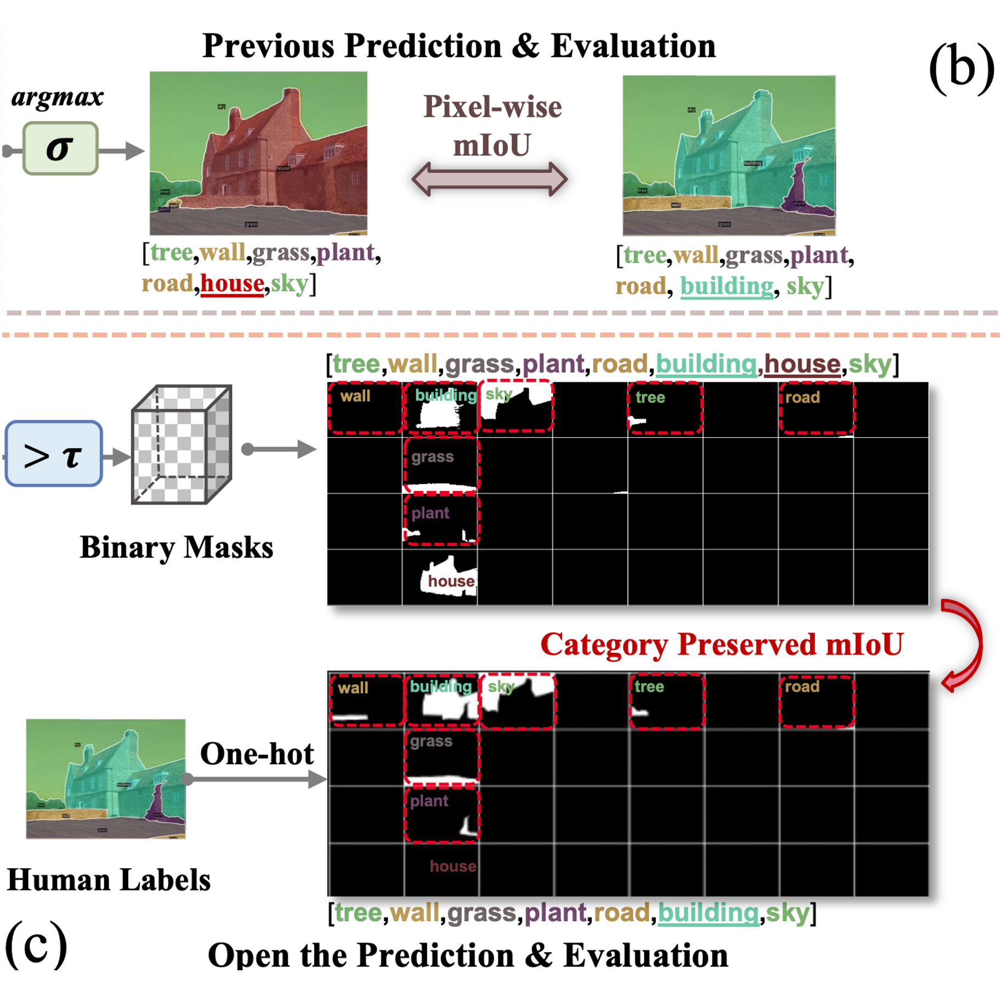
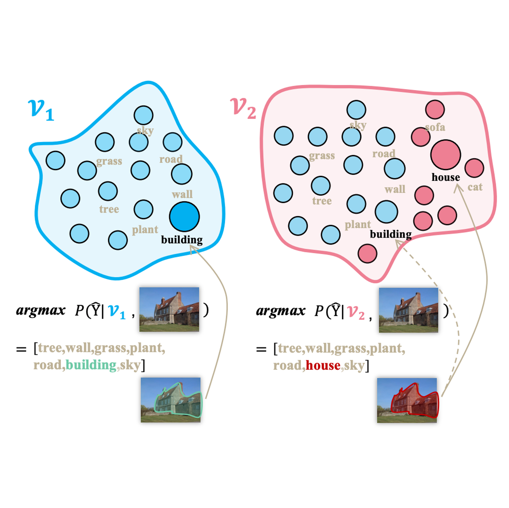
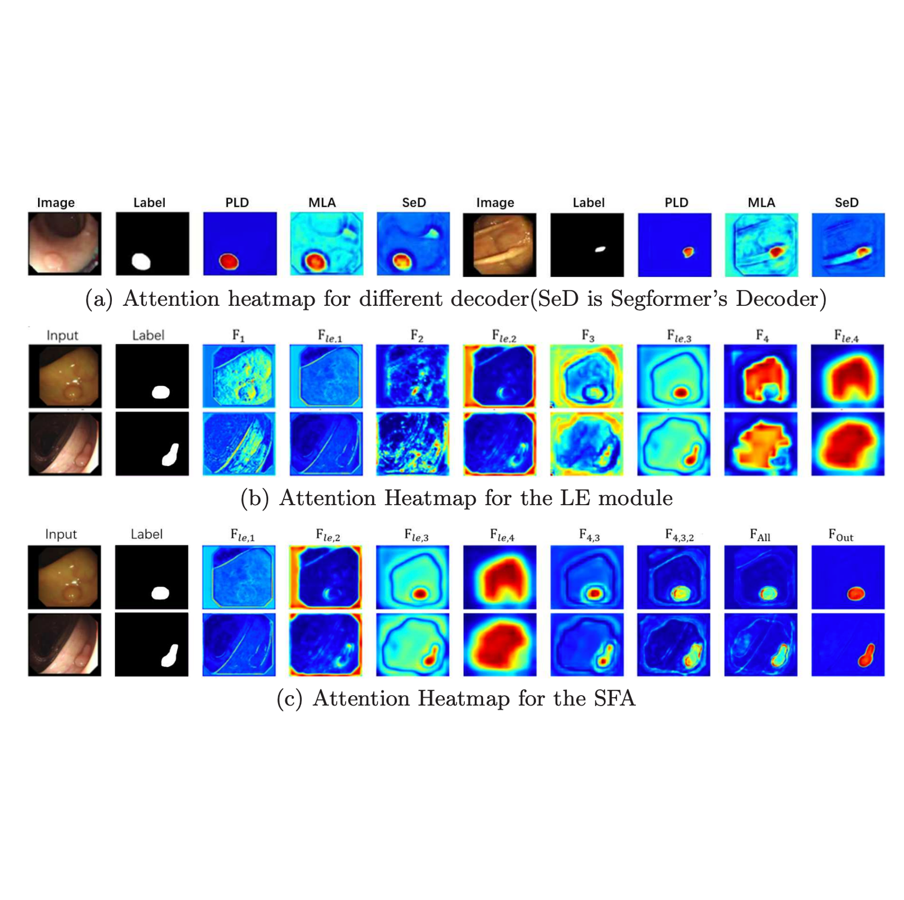

|
Qiming Huang I'm a first-year PhD student at MIx Group @ University of Birmingham, supervised by Prof. Jianbo Jiao. I obtained my B.Eng. degree in Data Science at Xi'an Jiaotong–Liverpool University in 2023. |
{kind=link}
ResearchI'm interested in open world learning problems in computer vision, focusing on the following aspects: 1) Open-world visual understanding, open vocabulary task 2) Visual Reasoning. If you are interested in open world learning, you are more than welcome to drop me an email. I am eager to brainstorm ideas related to open world learning. |
|


|
Revisit the Openness of Open Vocabulary Segmentation
Qiming Huang, Han Hu, Jianbo Jiao arVix, 2024 New inference and evaluation pipeline for open vocabulary segmentation from the perspective of openness. |
|

|
Stepwise Feature Fusion: Local Guides Global
Jinfeng Wang*, Qiming Huang*, Feilong Tang*, Jia Meng, Jionglong Su, Sifan Song, MICCAI, 2022 code / arXiv / Simple but powerful baseline for medical image segmentation. |
Experience
Topic: Transferability metric |
|
Template from here. |